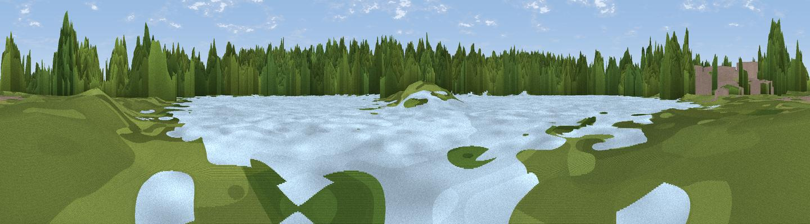

Viewpoint near Theale
#45281 in England · top 86% of its area beats it · near ThealeWhere it is
The exact computed spot (SU 64939 69756). Click the marker for map links.
The view, rendered

A 360° render of this exact spot computed from the terrain model, tree cover and land cover — summer colours, afternoon light, calibrated against photographs of famous viewpoints. Real trees, hedges and buildings will differ in detail.
The panorama
Grey silhouette: terrain skyline in each direction (720 bearings, Earth curvature and refraction included). Dashed green: skyline with trees (+15 m) and buildings (+8 m) as obstacles. Blue strip: how far the ground is visible on each bearing.
Where the view opens
Wedge length = distance to the farthest visible ground on that bearing (vegetation-aware). Rings at 10, 25 and 50 km.
What fills the view
55% woodland · 17% grassland · 17% water · 6% built-up · 5% cropland
Angular shares of the visible panorama (visual magnitude), not map area. Landscape diversity 0.54 (0–1 Shannon).
Key numbers
More beautiful places nearby
The staircase of upgrades: each row has a higher view potential than everything closer. Driving times are estimates from straight-line distance, calibrated against real road routing — check an actual route before setting out.
| Place | Direction | Drive | Score |
|---|---|---|---|
| Hermit's Hill | SSE · 2 km | ~6 min | 20.7 |
| Viewpoint near Theale | N · 3 km | ~7 min | 31.8 |
| Viewpoint near Whitchurch-on-Thames | N · 8 km | ~16 min | 33.9 |
| Viewpoint near Whitchurch-on-Thames | N · 8 km | ~16 min | 47.5 |
| Viewpoint near Streatley | NNW · 13 km | ~24 min | 57.2 |
| Viewpoint near Moulsford | NNW · 15 km | ~26 min | 58.8 |
| Viewpoint near Compton | NW · 17 km | ~29 min | 64.1 |
| Cottington's Hill | SW · 18 km | ~31 min | 65.0 |
51.42311, -1.06743 · source: osm viewpoint · position refined by local search. Computed location — check access rights before visiting.